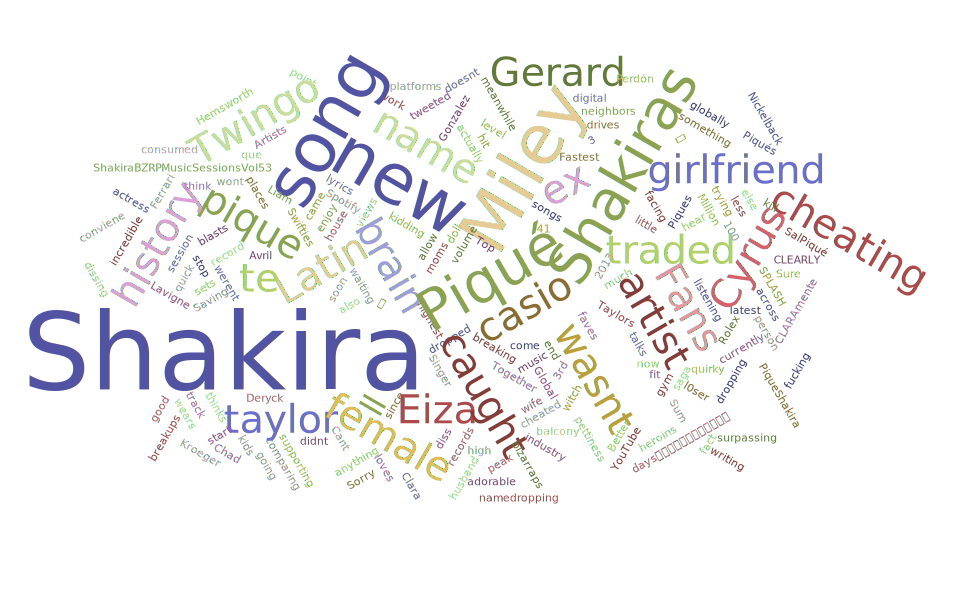

Tweeters' location
According to the chart, I found that this topic has a lot of interest in South America, North America and Europe.
I'm guessing that because the singer is Colombian and the song is also in Spanish, Spanish speakers pay more attention to her than to other places. Because many countries in South America use Spanish as the official language, and the United States in North America has a large number of Spanish immigrants[2], it is not surprising that there are many people concerned about these two places. Of course, it is undeniable that she is a very famous singer.
Besides, the number of people who use tweets is different in different countries. For example, China has a large population and many people follow this new song, but due to the small number of tweeters, it is not obvious on the map.
The time in the picture is Greenwich Mean Time. From one o’clock in the afternoon on the 12th, the popularity gradually decreased (1268 tweets), dropped to 760 tweets (12-Jan-21:00), and then rose rapidly to 1749 tweets. This trend may be related to the time difference. When the time is a country where users spend more time on Twitter and pay more attention to songs, the number of tweets increases, and vice versa.
These are two tweets with a relatively high retweet volume.

Then I searched for Shakira, and there are two obvious names on the world cloud, Pique or Piqué and Miley.
Pique is Shakira's ex-husband, and in the lyrics, he also insinuated that Pique had cheated. Miley Ray Cyrus is an American singer, songwriter, and actress.
Reference
[1]T. Velayutham and P. K. Tiwari, "Bot identification: Helping analysts for right data in twitter," 2017 3rd International Conference on Advances in Computing, Communication & Automation (ICACCA) (Fall), Dehradun, India, 2017, pp. 1-5, doi: 10.1109/ICACCAF.2017.8344722.
[2]U.S. Census. Facts for features: Hispanic Heritage Month 2015. www.census.gov/newsroom/factsfor-features/2015/cb15-ff18.html.